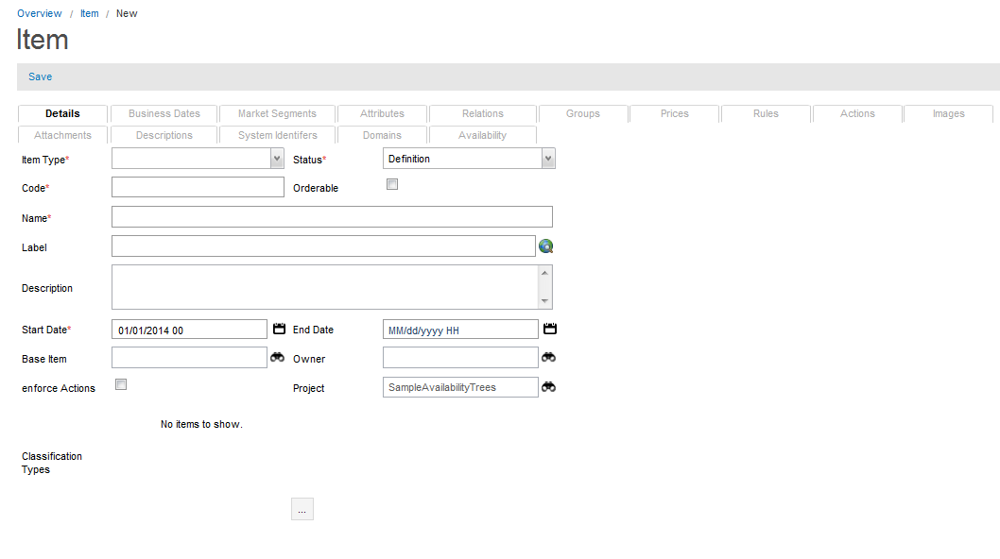

Add an Item
To add an Item, follow these steps:
Note: A project must be opened to create an item attribute.
- From the Overview page, click Commercial Modeling > Items in the Quick start section.
- The Item page appears; click the New button available in the results area.
- The Item page appears with the different tabs; click the Details tab.

- Enter or select the information in the following fields:
| Field |
Description |
| Item Type |
Select the item type for example, Component, Product, or Offer from the drop-down list.
- Components are entities that can be selected or priced separately.
- Products are collections of Components with their own Price Model. Products may or may not be Orderable.
- Offers are groupings of Products. They can be thought of as bundles or frequently ordered packages. You can use the Offer object to create a derivation of Products by applying a different set of restrictions over the original Product.
|
| Status |
Select a status of the item (for example, Definition or Active) from the drop-down list. |
| Code |
This field indicates the code that uniquely identifies the item. |
| Orderable |
If checked, the item can be ordered. The item will be returned during Catalog browsing. |
| Name |
This field indicates the unique name of the item. |
| Label |
The label for the item, which is used in the application user interface. This field is a translational string that supports language translations (refer to Velocity Studio's Translation Element for more details).
Note: This field for an item is not versioned. It is recommended that you use an item association with the item description object. The item description is a versioned object under item and can be used to show item label or description, or both. It also contains the Description translated field. You can create many item description objects under an item using a different code for each of them. In runtime, call item.getItemDescriptions(type) to get all item descriptions. |
| Description |
Enter the description for the Item in this field. |
| Start Date |
The effective date of this item. Refer to Start and End dates for details. |
| End Date |
The end date of this item represents the date when this attribute is no longer effective. Refer to Start and End dates for details. |
| Base Item |
Base item is the item extensions. |
Owner |
This field indicates information about the owner of the project. |
| Enforce Actions |
Select this check box to apply action for the items set through the Item Actions. This field takes a Boolean value. The default value is false. You can use this flag during runtime. For example, an exception occurs when you set enforce Action flag to true while item creation but there is no action for add type. The enforce Actions() in Item object is used to get the value. |
| Project |
Each object is assigned to a Project. This defaults to the active or opened project when the item is first created. |
| Classification Types |
Select different classification types to identify item under different environments. |
- Click the Save button.
- The item association tabs and the item palette become available. You can add different item associations (for example, attributes, images, and so on) through these options.
|